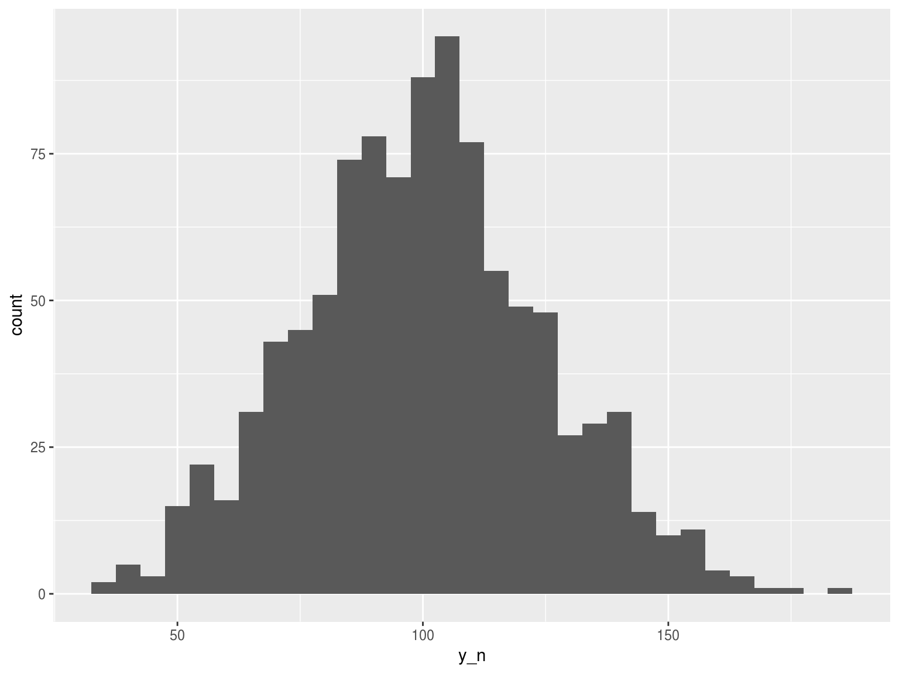
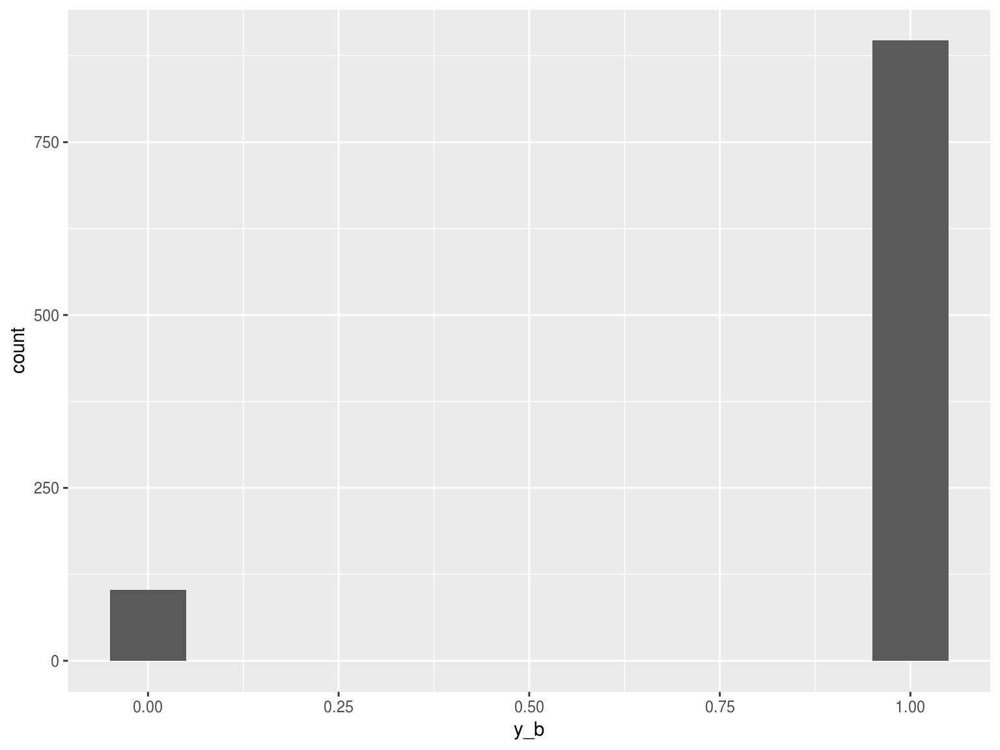

In a linear regression, the data we are trying to predict might look like: 
In a logistic regression, the data looks like: 
Trying to plot a standard regression would result in lots of error, instead we need to do something to make the results of a linear regression to put values closer to the two binomial outcomes.
We could use the probability of a given outcome as this gives us a range of values.
prob_y<-seq(0,1, by=.001)
qplot(prob_y,prob_y)The trouble with probabilities is they must be within 0 and 1 to make any sense and it would be tough to bind a linear regression to this range.
To bust out of this range, we could use odds, the probability of something happening versus it not happening to create a more dispersed value.
odds_y<- prob_y/(1-prob_y)
qplot(prob_y,odds_y)Using odds allows us to exceed 1, but there’s still no negative values allowed. Additionally, the relationship is distribution of values is difficult to model linearly.
To be able to get both a positive and a negative range of values allowed, we can take the log of the odds.
qplot(prob_y, log(odds_y))This now gives us a strong dispersal of values into positive and negative ranges, with a distribution much more suited to a linear regression model.
We can take a nuanced probabilistic approach to values, or simply say if the logit is positive, we predict the outcome 1, if not the outcome 0.
To get back to a probability from a logit (or vice versa) is pretty simple but I wrote some helper functions in the package optiRum to facilitate this.
library(optiRum)
logits <- -4:4
odds <- logit.odd(logits)
probs <- odd.prob(odds)
pred_class <- logits>=0
knitr::kable(data.frame(logits,odds,probs,pred_class))| logits | odds | probs | pred_class |
|---|---|---|---|
| -4 | 0.0183156 | 0.0179862 | FALSE |
| -3 | 0.0497871 | 0.0474259 | FALSE |
| -2 | 0.1353353 | 0.1192029 | FALSE |
| -1 | 0.3678794 | 0.2689414 | FALSE |
| 0 | 1.0000000 | 0.5000000 | TRUE |
| 1 | 2.7182818 | 0.7310586 | TRUE |
| 2 | 7.3890561 | 0.8807971 | TRUE |
| 3 | 20.0855369 | 0.9525741 | TRUE |
| 4 | 54.5981500 | 0.9820138 | TRUE |
prob.odd## function (prob)
## {
## prob/(1 - prob)
## }
## <environment: namespace:optiRum>odd.logit## function (odds)
## {
## log(odds)
## }
## <environment: namespace:optiRum>logit.odd## function (logit)
## {
## exp(logit)
## }
## <environment: namespace:optiRum>odd.prob## function (odds)
## {
## odds/(1 + odds)
## }
## <environment: namespace:optiRum>What sort of things can alter the results of a piece of analysis?
What sort of things can we do to prevent changes creeping into our analysis that stop it from being “deterministic”?
set.seedpackrat::init()